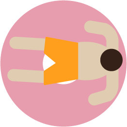
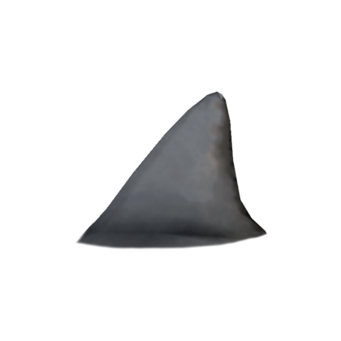

<!DOCTYPE html>
<html>

<head>
    <title>Mouse Events</title>
    <meta charset="utf-8" />
    <script src="paper-full.min.js" defer></script>

<script src="project2.js"></script>
    <link rel="stylesheet" href="Project2.css" type="text/css" />
</head>


<body>
<!-- 
 -->
<script type="text/paperscript" canvas="meta-ball">
// Ported from original Metaball script by SATO Hiroyuki
// http://park12.wakwak.com/~shp/lc/et/en_aics_script.html


project.currentStyle = {
	fillColor: '#f9005a'};

var ballPositions = [[80, 750]];


var handle_len_rate = 2.4;
var circlePaths = [];

              var dave = new Path.Circle({
                          center: [1378, 925],
                          radius: 80
                        });
                        // pink middle
              var dave2 = new Path.Circle({
                          center: [945, 800],
                          radius: 50
                      });
                      // orange bottom
              var dave3 = new Path.Circle({
                          center: [505, 900],
                          radius: 30
                        });
                        // purple left
              var dave4 = new Path.Circle({
                          center: [1600, 50],
                          radius: 90
                        });
                        // yellow right
              var dave5 = new Path.Circle({
                          center: [1630, 500],
                          radius: 20
                        });
                        // purple left small
              var dave6 = new Path.Circle({
                          center: [289, 351],
                          radius: 25
                        });
                        // orange middle
              var dave7 = new Path.Circle({
                          center: [1188, 420],
                          radius: 60
                        });
                        // top yellow middle
              var dave8 = new Path.Circle({
                          center: [738, 400],
                          radius: 70
                        });
              var dave9 = new Path.Circle({
                          center: [1050, -10],
                          radius: 25
                        });
                        // deep purple top leftish
              var dave10 = new Path.Circle({
                          center: [600, -29],
                          radius: 85
                        });
                        // very left top
              var dave11 = new Path.Circle({
                          center: [0, 0],
                          radius: 60
                        });


var circlePath = new Path.Circle({
  center: ballPositions[0],
  radius: 100,
});
var circlePath2 = new Path.Circle({
  center: ballPositions[0],
  radius: 100,
});

circlePaths.push(circlePath);
                            circlePaths.push(dave);
                            circlePaths.push(dave2);
                            circlePaths.push(dave3);
                            circlePaths.push(dave4);
                            circlePaths.push(dave5);
                            circlePaths.push(dave6);
                            circlePaths.push(dave7);
                            circlePaths.push(dave8);
                            circlePaths.push(dave9);
                            circlePaths.push(dave10);
                            circlePaths.push(dave11);

circlePaths[0].selected = false;
circlePaths[0].fillColor = '#5f2441';
                            dave.selected = false;
                            dave.fillColor = '#5f2441';
                            circlePaths[0].selected = false;

                            circlePaths[0].fillColor = '#146060';
                                  dave2.selected = false;
                                  dave2.fillColor = '#146060';

                            circlePaths[0].fillColor = '#ff6420';
                                  dave3.selected = false;
                                  dave3.fillColor = '#ff6420';
                            circlePaths[0].fillColor = '#146060';
                                  dave4.selected = false;
                                  dave4.fillColor = '#146060';
                            circlePaths[0].fillColor = '#146060';
                                  dave5.selected = false;
                                  dave5.fillColor = '#fbae36';
                            circlePaths[0].fillColor = '#a0005c';
                                  dave6.selected = false;
                                  dave6.fillColor = '#a0005c';
                            circlePaths[0].fillColor = '#ff6420';
                                  dave7.selected = false;
                                  dave7.fillColor = '#ff6420';
                            circlePaths[0].fillColor = '#fbae36';
                                  dave8.selected = false;
                                  dave8.fillColor = '#fbae36';
                            circlePaths[0].fillColor = '#f9005a';
                                  dave9.selected = false;
                                  dave9.fillColor = '#f9005a';
                            circlePaths[0].fillColor = '#5f2441';
                                  dave10.selected = false;
                                  dave10.fillColor = '#5f2441';
                            circlePaths[0].fillColor = '#ff6420';
                                  dave11.selected = false;
                                  dave11.fillColor = '#ff6420';

var largeCircle = new Path.Circle({
	center: [535, 120],
	radius: 50
});

var largeCircleIndex = circlePaths.length

circlePaths.push(largeCircle);

function onMouseMove(event) {

  largeCircle.fillColor = 'white';

	largeCircle.position = event.point;
	generateConnections(circlePaths);
}
var connections = new Group();
function generateConnections(paths) {
	// Remove the last connection paths:
	connections.children = [];
  var debug = false;

	for (var i = 0, l = paths.length; i < l; i++) {
		for (var j = i - 1; j >= 0; j--) {
			var path = metaball(paths[i], paths[j], 0.5, handle_len_rate, 225, j === 0, debug);
			if (path) {
				connections.appendTop(path);
				path.removeOnMove();

        if(i == largeCircleIndex){
             // there is a connection, and its between dave and largeCircle
             largeCircle.fillColor = paths[j].fillColor;
             console.log(largeCircle)
         }

			}
      debug = false;
		}
	}
}
generateConnections(circlePaths);
// ---------------------------------------------
function metaball(ball1, ball2, v, handle_len_rate, maxDistance, debug) {
	var center1 = ball1.position;
	var center2 = ball2.position;
	var radius1 = ball1.bounds.width / 2;
	var radius2 = ball2.bounds.width / 2;
	var pi2 = Math.PI / 2;
	var d = center1.getDistance(center2);
	var u1, u2;
	if (radius1 == 0 || radius2 == 0)
		return;
	if (d > maxDistance || d <= Math.abs(radius1 - radius2)) {
		return;
	} else if (d < radius1 + radius2) { // case circles are overlapping
		u1 = Math.acos((radius1 * radius1 + d * d - radius2 * radius2) /
				(2 * radius1 * d));
		u2 = Math.acos((radius2 * radius2 + d * d - radius1 * radius1) /
				(2 * radius2 * d));
	} else {
		u1 = 0;
		u2 = 0;
	}
	var angle1 = (center2 - center1).getAngleInRadians();
	var angle2 = Math.acos((radius1 - radius2) / d);
	var angle1a = angle1 + u1 + (angle2 - u1) * v;
	var angle1b = angle1 - u1 - (angle2 - u1) * v;
	var angle2a = angle1 + Math.PI - u2 - (Math.PI - u2 - angle2) * v;
	var angle2b = angle1 - Math.PI + u2 + (Math.PI - u2 - angle2) * v;
	var p1a = center1 + getVector(angle1a, radius1);
	var p1b = center1 + getVector(angle1b, radius1);
	var p2a = center2 + getVector(angle2a, radius2);
	var p2b = center2 + getVector(angle2b, radius2);
	// define handle length by the distance between
	// both ends of the curve to draw
	var totalRadius = (radius1 + radius2);
	var d2 = Math.min(v * handle_len_rate, (p1a - p2a).length / totalRadius);
	// case circles are overlapping:
	d2 *= Math.min(1, d * 2 / (radius1 + radius2));
	radius1 *= d2;
	radius2 *= d2;
	var path = new Path({
		segments: [p1a, p2a, p2b, p1b],
		style: ball2.style,
		closed: false
	});
  if (debug) { path.fullySelected = false; }
	var segments = path.segments;
	segments[0].handleOut = getVector(angle1a - pi2, radius1);
	segments[1].handleIn = getVector(angle2a + pi2, radius2);
	segments[2].handleOut = getVector(angle2b - pi2, radius2);
	segments[3].handleIn = getVector(angle1b + pi2, radius1);
	return path;
}
// ------------------------------------------------
function getVector(radians, length) {
	return new Point({
		// Convert radians to degrees:
		angle: radians * 180 / Math.PI,
		length: length
	});
}
</script>
<canvas resize="true" id="meta-ball"></canvas>


</body>
</html>
